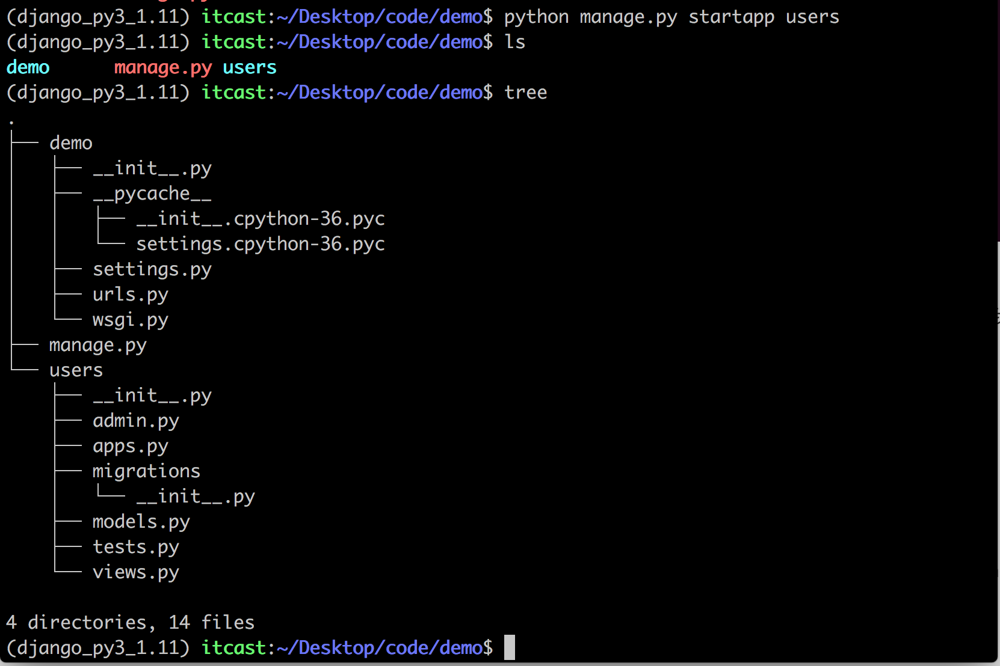
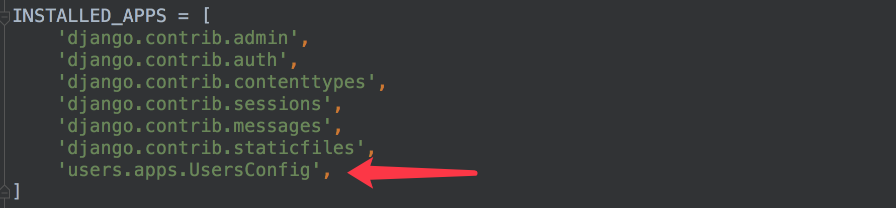

创建子应用
在Web应用中，通常有一些业务功能模块是在不同的项目中都可以复用的，故在开发中通常将工程项目拆分为不同的子功能模块，各功能模块间可以保持相对的独立，在其他工程项目中需要用到某个特定功能模块时，可以将该模块代码整体复制过去，达到复用。
在Flask框架中也有类似子功能应用模块的概念，即蓝图Blueprint。
Django的视图编写是放在子应用中的。
1. 创建
在django中，创建子应用模块目录仍然可以通过命令来操作，即：
python manage.py startapp 子应用名称
manage.py 为上述创建工程时自动生成的管理文件。
例如，在刚才创建的demo工程中，想要创建一个用户users子应用模块，可执行：
cd ~/Desktop/code/demo
python manage.py startapp users
执行后，可以看到工程目录中多出了一个名为users的子目录。
2. 子应用目录说明
查看此时的工程目录，结构如下：

- admin.py 文件跟网站的后台管理站点配置相关。
- apps.py 文件用于配置当前子应用的相关信息。
- migrations 目录用于存放数据库迁移历史文件。
- models.py 文件用户保存数据库模型类。
- tests.py 文件用于开发测试用例，编写单元测试。
- views.py 文件用于编写Web应用视图。
3. 注册安装子应用
创建出来的子应用目录文件虽然被放到了工程项目目录中，但是django工程并不能立即直接使用该子应用，需要注册安装后才能使用。
在工程配置文件settings.py中，INSTALLED_APPS项保存了工程中已经注册安装的子应用，初始工程中的INSTALLED_APPS如下：
注册安装一个子应用的方法，即是将子应用的配置信息文件apps.py中的Config类添加到INSTALLED_APPS列表中。
例如，将刚创建的users子应用添加到工程中，可在INSTALLED_APPS列表中添加'users.apps.UsersConfig'。
